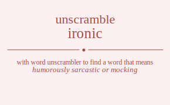

The word found after unscrambling ironic means that humorously sarcastic or mocking, characterized by often poignant difference or incongruity between what is expected and what actually is, .

The word found after unscrambling ironic means that humorously sarcastic or mocking, characterized by often poignant difference or incongruity between what is expected and what actually is, .
You can also find solutions for different combinations of letters in ironic like ironic ironci iroinc iroicn irocni irocin irnoic irnoci irnioc irnico irncoi irncio irionc iriocn irinoc irinco iricon iricno irconi ircoin ircnoi ircnio ircion ircino iornic iornci iorinc ioricn iorcni iorcin ionric ionrci ionirc ionicr ioncri ioncir ioirnc ioircn ioinrc ioincr ioicrn ioicnr iocrni iocrin iocnri iocnir iocirn iocinr inroic inroci inrioc inrico inrcoi inrcio inoric inorci inoirc inoicr inocri inocir iniroc inirco iniorc iniocr inicro inicor incroi incrio incori incoir inciro incior iironc iirocn iirnoc iirnco iircon iircno iiornc iiorcn iionrc iioncr iiocrn iiocnr iinroc iinrco iinorc iinocr iincro iincor iicron iicrno iicorn iiconr iicnro iicnor icroni icroin icrnoi icrnio icrion icrino icorni icorin iconri iconir icoirn icoinr icnroi icnrio icnori icnoir icniro icnior iciron icirno iciorn icionr icinro icinor rionic rionci rioinc rioicn riocni riocin rinoic rinoci rinioc rinico rincoi rincio riionc riiocn riinoc riinco riicon riicno riconi ricoin ricnoi ricnio ricion ricino roinic roinci roiinc roiicn roicni roicin roniic ronici roniic ronici roncii roncii roiinc roiicn roinic roinci roicin roicni rocini rociin rocnii rocnii rociin rocini rnioic rnioci rniioc rniico rnicoi rnicio rnoiic rnoici rnoiic rnoici rnocii rnocii rniioc rniico rnioic rnioci rnicio rnicoi rncioi rnciio rncoii rncoii rnciio rncioi riionc riiocn riinoc riinco riicon riicno rioinc rioicn rionic rionci riocin riocni rinioc rinico rinoic rinoci rincio rincoi ricion ricino ricoin riconi ricnio ricnoi rcioni rcioin rcinoi rcinio rciion rciino rcoini rcoiin rconii rconii rcoiin rcoini rcnioi rcniio rcnoii rcnoii rcniio rcnioi rciion rciino rcioin rcioni rcinio rcinoi oirnic oirnci oirinc oiricn oircni oircin oinric oinrci oinirc oinicr oincri oincir oiirnc oiircn oiinrc oiincr oiicrn oiicnr oicrni oicrin oicnri oicnir oicirn oicinr orinic orinci oriinc oriicn oricni oricin orniic ornici orniic ornici orncii orncii oriinc oriicn orinic orinci oricin oricni orcini orciin orcnii orcnii orciin orcini oniric onirci oniirc oniicr onicri onicir onriic onrici onriic onrici onrcii onrcii oniirc oniicr oniric onirci onicir onicri onciri onciir oncrii oncrii onciir onciri oiirnc oiircn oiinrc oiincr oiicrn oiicnr oirinc oiricn oirnic oirnci oircin oircni oinirc oinicr oinric oinrci oincir oincri oicirn oicinr oicrin oicrni oicnir oicnri ocirni ocirin ocinri ocinir ociirn ociinr ocrini ocriin ocrnii ocrnii ocriin ocrini ocniri ocniir ocnrii ocnrii ocniir ocniri ociirn ociinr ocirin ocirni ocinir ocinri niroic niroci nirioc nirico nircoi nircio nioric niorci nioirc nioicr niocri niocir niiroc niirco niiorc niiocr niicro niicor nicroi nicrio nicori nicoir niciro nicior nrioic nrioci nriioc nriico nricoi nricio nroiic nroici nroiic nroici nrocii nrocii nriioc nriico nrioic nrioci nricio nricoi nrcioi nrciio nrcoii nrcoii nrciio nrcioi noiric noirci noiirc noiicr noicri noicir noriic norici noriic norici norcii norcii noiirc noiicr noiric noirci noicir noicri nociri nociir nocrii nocrii nociir nociri niiroc niirco niiorc niiocr niicro niicor nirioc nirico niroic niroci nircio nircoi nioirc nioicr nioric niorci niocir niocri niciro nicior nicrio nicroi nicoir nicori nciroi ncirio nciori ncioir nciiro nciior ncrioi ncriio ncroii ncroii ncriio ncrioi ncoiri ncoiir ncorii ncorii ncoiir ncoiri nciiro nciior ncirio nciroi ncioir nciori iironc iirocn iirnoc iirnco iircon iircno iiornc iiorcn iionrc iioncr iiocrn iiocnr iinroc iinrco iinorc iinocr iincro iincor iicron iicrno iicorn iiconr iicnro iicnor irionc iriocn irinoc irinco iricon iricno iroinc iroicn ironic ironci irocin irocni irnioc irnico irnoic irnoci irncio irncoi ircion ircino ircoin irconi ircnio ircnoi ioirnc ioircn ioinrc ioincr ioicrn ioicnr iorinc ioricn iornic iornci iorcin iorcni ionirc ionicr ionric ionrci ioncir ioncri iocirn iocinr iocrin iocrni iocnir iocnri iniroc inirco iniorc iniocr inicro inicor inrioc inrico inroic inroci inrcio inrcoi inoirc inoicr inoric inorci inocir inocri inciro incior incrio incroi incoir incori iciron icirno iciorn icionr icinro icinor icrion icrino icroin icroni icrnio icrnoi icoirn icoinr icorin icorni iconir iconri icniro icnior icnrio icnroi icnoir icnori cironi ciroin cirnoi cirnio cirion cirino ciorni ciorin cionri cionir cioirn cioinr cinroi cinrio cinori cinoir ciniro cinior ciiron ciirno ciiorn ciionr ciinro ciinor crioni crioin crinoi crinio criion criino croini croiin cronii cronii croiin croini crnioi crniio crnoii crnoii crniio crnioi criion criino crioin crioni crinio crinoi coirni coirin coinri coinir coiirn coiinr corini coriin cornii cornii coriin corini coniri coniir conrii conrii coniir coniri coiirn coiinr coirin coirni coinir coinri cniroi cnirio cniori cnioir cniiro cniior cnrioi cnriio cnroii cnroii cnriio cnrioi cnoiri cnoiir cnorii cnorii cnoiir cnoiri cniiro cniior cnirio cniroi cnioir cniori ciiron ciirno ciiorn ciionr ciinro ciinor cirion cirino ciroin cironi cirnio cirnoi cioirn cioinr ciorin ciorni cionir cionri ciniro cinior cinrio cinroi cinoir cinori.
Unscramble Words is registered trademark.